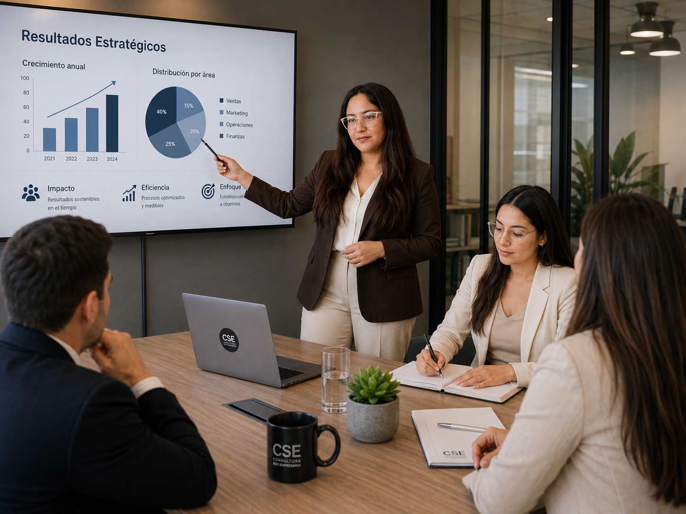

Contabilidad
Gestión contable mensual, balances, conciliaciones bancarias, revisión de documentación y acompañamiento en los procesos administrativos de tu empresa.
ASESORÍA CONTABLE · TRIBUTARIA · LABORAL
Acompañamos a emprendedores y empresas en su gestión contable, tributaria y laboral, con soluciones claras, cercanas y adaptadas a las necesidades de cada negocio.
Para que puedas tomar mejores decisiones y concentrarte en hacer crecer tu empresa.
QUÉ HACEMOS
Una buena gestión contable permite entender lo que está pasando en tu negocio, anticiparte a los problemas y tomar decisiones con mayor seguridad.
En CSE acompañamos a nuestros clientes en tres áreas fundamentales:
Gestión contable mensual, balances, conciliaciones bancarias, revisión de documentación y acompañamiento en los procesos administrativos de tu empresa.
Declaraciones de impuestos, renta anual, declaraciones juradas, rectificaciones, regularizaciones y trámites ante el SII.
Remuneraciones, contratos, finiquitos y apoyo en el cumplimiento de las obligaciones laborales de tu empresa.
PLANES MENSUALES
No todas las empresas necesitan lo mismo. Por eso en CSE contamos con planes mensuales que se adaptan al nivel de gestión y acompañamiento que necesita cada negocio.
PARA COMENZAR
GESTIÓN ESENCIAL
MAYOR ACOMPAÑAMIENTO
GESTIÓN INTEGRAL
SERVICIOS CSE
No todas las empresas necesitan lo mismo. Por eso puedes trabajar con CSE mediante un acompañamiento mensual o contratar servicios específicos cuando los necesites.
Te acompañamos desde la constitución hasta los primeros pasos para comenzar a operar.
Realizamos y orientamos el proceso de formalización tributaria ante el SII.
Preparación y presentación de la declaración anual de renta.
Revisamos inconsistencias y te ayudamos a regularizar declaraciones y situaciones pendientes.
Gestionamos el proceso tributario necesario para cerrar correctamente una actividad o empresa.
Modificaciones, peticiones administrativas y otras gestiones tributarias.
Contabilidad, remuneraciones, contratos y otros procesos necesarios para mantener tu empresa en orden.
Analizamos tu situación y te orientamos para que puedas tomar decisiones con mayor información.
NUESTRO EQUIPO
Creemos que una buena asesoría comienza por conocer a nuestros clientes, entender sus negocios y explicar de manera sencilla incluso los temas más complejos.
Responsable de la dirección de la consultora y del acompañamiento contable, tributario y estratégico de nuestros clientes.

Apoya la gestión contable y administrativa de nuestros clientes y los procesos internos que permiten entregar un servicio ordenado y oportuno.
CÓMO TRABAJAMOS
Te acompañamos con un proceso claro, profesional y cercano.
Conocemos tu empresa, tus necesidades y la situación que necesitas resolver.
Evaluamos la información y definimos el servicio o modalidad de trabajo más adecuada.
Te acompañamos con una gestión profesional, ordenada y cercana, manteniendo una comunicación clara durante el proceso.

SOBRE CSE
Consultora Soy Empresario nace desde la experiencia de conocer de cerca los desafíos que implica construir y administrar una empresa.
Sabemos que detrás de cada declaración, balance o trámite existe una persona tomando decisiones, asumiendo riesgos y tratando de hacer crecer un proyecto.
Por eso buscamos entregar una asesoría profesional, pero también cercana, clara y comprensible.
Hoy CSE es un equipo que acompaña a emprendedores y empresas en su gestión contable, tributaria y laboral, combinando experiencia técnica con una atención personalizada.

CSE ENSEÑA
En CSE creemos que nuestros clientes no solo deben recibir información: también deben poder comprenderla.
Por eso creamos espacios de aprendizaje donde puedes resolver tus dudas directamente con un profesional y aprender sobre los procesos que necesitas manejar en tu negocio.
CONTENIDO EDUCATIVO
Tutoriales simples sobre SII, Dirección del Trabajo, impuestos y procesos que todo emprendedor debería conocer.
Tutoriales simples para comprender procesos y trámites ante el Servicio de Impuestos Internos.
Contenidos claros sobre procesos laborales y gestiones ante la Dirección del Trabajo.
Explicaciones simples sobre impuestos y procesos que todo emprendedor debería conocer.
TESTIMONIOS DE CLIENTES
La experiencia de quienes han confiado en CSE para acompañar la gestión de sus empresas.
“Hace siete años confiamos la contabilidad de VEAstudios a CSE a cargo de Carla Chamorro, quien durante este tiempo se ha destacado por ser una profesional rigurosa, responsable y confiable, siempre disponible para responder nuestras consultas con rapidez. Valoro especialmente su flexibilidad y disposición para apoyarnos en gestiones extraordinarias, como la preparación de documentos legales requeridos en licitaciones. Más que nuestra contadora, ha sido una verdadera aliada para la empresa. La recomiendo plenamente.”
“He tenido la oportunidad de trabajar con Carla en modalidad de alianza en el área de Contabilidad e Impuestos, y solo puedo decir que la recomiendo 100%. Es una profesional muy comprometida, responsable y rigurosa en su trabajo, destacando además por su excelente disposición y conocimiento técnico. Ha sido un gusto trabajar con ella y contar con su apoyo profesional.”
“¡Excelente servicio y total tranquilidad! Como empresa enfocada en la rehabilitación avanzada, en Vida Salud nuestro trabajo exige máxima precisión y dedicación a nuestros pacientes. Contar con su respaldo contable nos ha dado la tranquilidad absoluta para enfocarnos en lo que mejor sabemos hacer, sabiendo que toda la parte tributaria, financiera y administrativa está en manos impecables, organizadas y siempre a tiempo.”
CONVERSEMOS
Cuéntanos qué necesitas.
Revisaremos tu caso y te orientaremos hacia el servicio, plan o asesoría que mejor se adapte a las necesidades de tu empresa.
Asesoría contable · tributaria · laboral
Atención online y personalizada